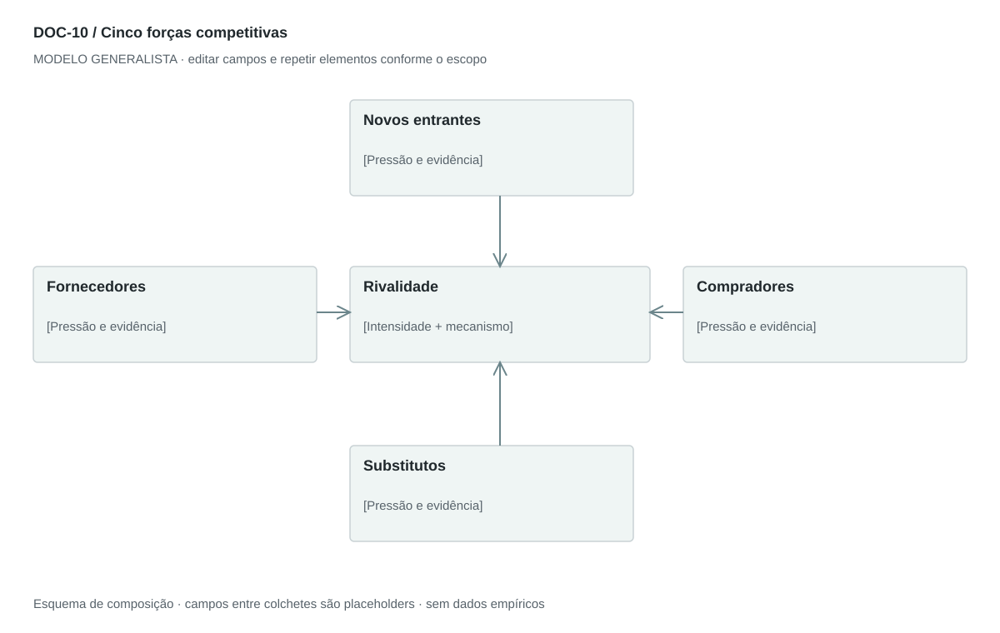

DOC-10 / Biblioteca documental generalista
Cinco forças competitivas
Avaliar pressões estruturais sobre margem e capacidade de competir em um mercado definido.
Modelo de investigação. Não representa uma análise concluída. Campos vazios devem permanecer identificados; não inventar dados para completar figuras.
Estrutura editorial
2–3 páginas + diagrama de cinco forças. Uma ficha por força com mecanismo, evidência, intensidade e implicação estratégica.
Visual previsto

Rivalidade ao centro; entrantes acima, substitutos abaixo, fornecedores à esquerda e compradores à direita. Rótulos de intensidade e síntese; setas indicam pressão, não fluxo financeiro.
Imagens: Diagrama vetorial é suficiente. Logotipos de concorrentes são opcionais e precisam de origem; não incluir marcas apenas para preencher espaço.
Dicionário de dados
| Campo | Tipo | Dado necessário |
|---|
| mercado | texto | Fronteira competitiva analisada |
| forca | enum | entrantes, fornecedores, compradores, substitutos ou rivalidade |
| fator | texto | Driver estrutural da pressão |
| mecanismo_margem | texto | Como o fator altera preço, custo ou captura de valor |
| intensidade | enum | baixa, media, alta ou desconhecida |
| justificativa | texto | Rubrica e evidência da classificação |
| alternativa | texto | Concorrente, substituto ou mudança de arranjo |
| resposta | texto | Escolha estratégica relacionada à força |
Todos os registros precisam de classificação, fonte, localização, datas, confiança e limitação. Números também precisam de unidade, moeda quando aplicável e período.
Modelo preenchível
Os quadros amarelos podem ser editados nesta página para impressão. Edições não são gravadas automaticamente: use o Markdown/JSON para manter uma versão ou imprima em PDF após editar.
[Negócio] · [Versão] · [Data-base] · [Autor] · [Audiência] · [Território]
Pergunta decisória: [A preencher]
Escopo: [A preencher]
1. Definição do mercado
Delimite produto ou serviço, comprador, território e alternativas para o mesmo resultado.
[Análise + evidência + implicação + lacuna]
2. Novos entrantes
Barreiras de capital, acesso, escala, conhecimento e distribuição.
[Análise + evidência + implicação + lacuna]
3. Poder de fornecedores
Concentração, dependência, substituição e custo de troca.
[Análise + evidência + implicação + lacuna]
4. Poder de compradores
Concentração de receita, alternativas, negociação e custo de troca.
[Análise + evidência + implicação + lacuna]
5. Substitutos
Outras maneiras de resolver a tarefa, incluindo fazer internamente ou não agir.
[Análise + evidência + implicação + lacuna]
6. Rivalidade
Concorrentes diretos, crescimento, diferenciação e disputa de preço.
[Análise + evidência + implicação + lacuna]
7. Síntese e resposta
Escolhas para reduzir exposição e hipóteses que poderiam mudar a avaliação.
[Análise + evidência + implicação + lacuna]
Decisão e próximo passo
[Decisão e justificativa]
[Alternativa considerada]
[Condição de reversão]
[Ação, responsável, prazo e critério]
Fontes e limites
[Fonte + localização + datas + o que sustenta + limitações]
Critérios de revisão
- Substituto resolve a tarefa por outra via; concorrente direto disputa oferta semelhante.
- Intensidade é qualitativa e fundamentada, não média estatística.
- Recomendação responde ao mecanismo de pressão.
Estudo do arquivo original
Porter's Five Forces Analysis.pdf — Três páginas retrato. Cinco seções com introdução, fatores e conclusão qualitativa; quadro-resumo inserido como imagem na terceira página e três recomendações finais. A forma é explicativa, não quantitativa. Intensidades dependem da fronteira de mercado escolhida.
Observação do original e adaptação recomendada são camadas distintas. Nomes, preços, localidades, contatos e conclusões do caso-fonte não devem preencher a nova análise.